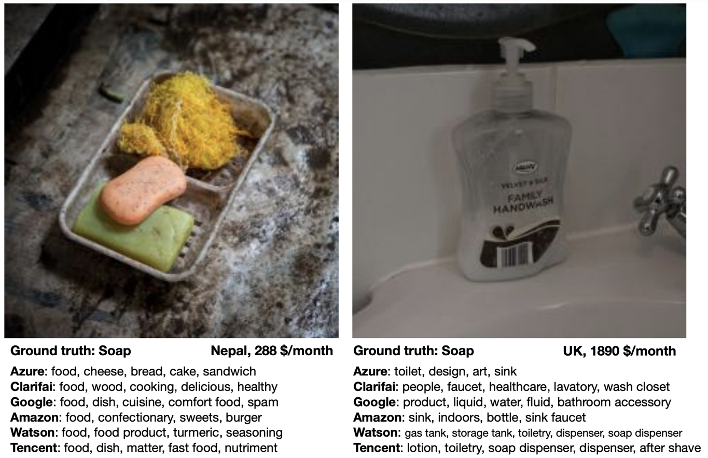
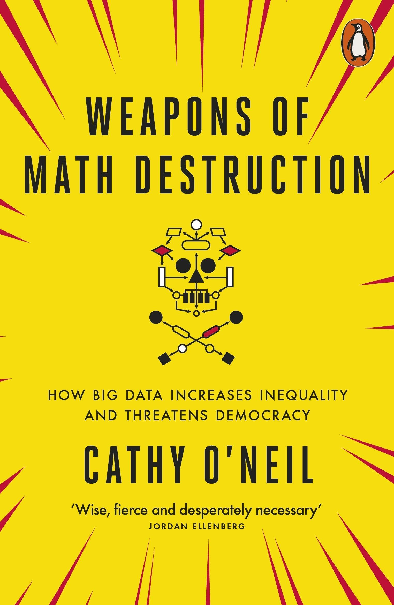

Avoiding Common Pitfalls
All models are wrong, but some are useful.
– George E. P. Box
The above quote is also nicely exemplified by this xkcd comic:

A supervised learning model tries to infer the relationship between some inputs and outputs from the given exemplary data points. What kind of relation will be found is largely determined by the chosen model type and its internal optimization algorithm, however, there is a lot we can (and should) do to make sure what the algorithm comes up with is not blatantly wrong.
What do we want?
A model that …
- … makes accurate predictions
- … for new data points
- … for the right reasons
- … even when the world keeps on changing.
In the following, we’ll discuss several common pitfalls and how to avoid them.
[Pitfall #1] Deceptive model evaluation
Predictive models need to be evaluated, i.e., their performance needs to be quantified with an appropriate evaluation metric to get a realistic estimate of how useful a model will be in practice and how many mistakes we have to expect from it.
Since in supervised learning problems we know the ground truth, we can objectively evaluate different models and benchmark them against each other.
Is this a good model for the task?
I.e., does the model generate reliable predictions for new data points?
- Split the data into training and test sets to be able to get a reliable estimate of how the model will later perform when applied to new data points that it wasn’t trained on.
- Quantify the quality of the model’s predictions on the test set with a suitable evaluation metric (depending on the problem type).
⇒ Are some mistakes worse than others (e.g., consider false positives vs. false negatives in medical tests)?
⇒ Always choose a single metric/KPI to optimize (maybe: additional constraints like runtime).
However, it can be quite easy to paint an overly optimistic picture here, therefore we always need to be critical and, for example, compare the performance of a model to that of a baseline. The simplest comparison would be to a “stupid” model that only predicts the mean (→ regression) or most frequent class (→ classification).
Evaluation metrics in the face of unbalanced class distributions
The accuracy is a very commonly used evaluation metric for classification problems:
Accuracy: Fraction of samples that were classified correctly.
Below we see the decision boundaries of two models on a toy dataset, where the background color indicates whether the model predicts the blue or red class for a data point in this area. Which model do you think is more useful?

With unbalanced class distributions, e.g., in this case a lot more samples from the blue compared to the red class, the accuracy of a model that simply always predicts the most frequent class can be quite large. But while a 90% accuracy might sound impressive when we report the performance of a model to the project’s stakeholders, this does not necessarily mean that the model is actually useful, especially since in real world problems the undersampled class is often the one we care about most, e.g., people with a rare disease or products that have a defect.
Instead, the balanced accuracy is often the more informative measure when evaluating classification models and can help us to distinguish between a model that has actually learned something and the ‘stupid baseline’:
Balanced Accuracy: First the fraction of correctly classified samples is computed for each class individually and then these values are averaged.

[Pitfall #2] Model does not generalize
We want a model that captures the ‘input → output’ relationship in the data and is capable of interpolating, i.e., we need to check:
Does the model generate reliable predictions for new data points from the same distribution as the training set?
While this does not ensure that the model has actually learned any true causal relationship between inputs and outputs and can extrapolate beyond the training domain (we’ll discuss this in the next section), at least we can be reasonably sure that the model will generate reliable predictions for data points similar to those used for training the model. If this isn’t given, the model is not only wrong, it’s also useless.
So, why does a model make mistakes on new data points? A poor performance on the test set can have two reasons: overfitting or underfitting.

These two scenarios require vastly different approaches to improve the model’s performance.
Since most datasets have lots of input variables, we can’t just plot the model like we did above to see if it is over- or underfitting. Instead we need to compute the model’s prediction error with a meaningful evaluation metric for both the training and the test set and compare the two to see if we’re dealing with over- or underfitting:
Overfitting: great training performance, bad on test set
Underfitting: poor training AND test performance

Depending on whether a model over- or underfits, different measures that can be taken to improve its performance. However, it is unrealistic to expect a model to have a perfect performance, as some tasks are just hard, for example, because the data is very noisy.
Always look at the data! Is there a pattern among wrong predictions, e.g., is there a discrepancy between the performance for different classes?
[Pitfall #3] Model abuses spurious correlations
Even when a model is capable of generating correct predictions for new data points from the same distribution as the training set, this does not mean that the model actually picked up on the true causal relationship between the inputs and outputs!
ML models love to cheat & take shortcuts! They will often pick up on spurious correlations instead of learning the true causal relationships. This makes them vulnerable to adversarial attacks and data/domain shifts, which force the model to extrapolate instead of interpolate.
A correct prediction is not always made for the right reasons!
The graphic below is taken from a paper where the authors noticed that a fairly simple ML model (not a neural network) trained on a standard image classification dataset performed poorly for all ten classes in the dataset except one, horses. When they examined the dataset more closely and analyzed why the model predicted a certain class, i.e., which image features were used in the prediction (displayed as the heatmap on the right), they noticed that most of the pictures of horses in the dataset were taken by the same photographer and they all had a characteristic copyright notice in the lower left corner.

By relying on this artifact, the model could identify what it perceives as “horses” in this dataset with high accuracy – both in the training and the test set, which includes pictures from the same photographer. However, of course the model failed to learn what actually defines a horse and would not be able to extrapolate and achieve the same accuracy on other horse pictures without this copyright notice. Or, equally problematic, one could add such a copyright notice to a picture of another animal and suddenly the model would mistakenly classify this as a horse, too. This means, it is possible to purposefully trick the model, which is also called an “adversarial attack”.
This is by far not the only example where a model has “cheated” by exploiting spurious correlations in the training set. Another popular example: A dataset with images of dogs and wolves, where all wolves were photographed on snowy backgrounds and the dogs on grass or other non-white backgrounds. Models trained on such a dataset can show a good predictive performance without having learned the true causal relationship between the features and labels.
To catch these kinds of mishaps, it is important to
- critically examine the test set and hopefully notice any problematic patterns that could result in an overly optimistic performance estimate, and
- interpret the model and explain its predictions to see if it has focused on the features you (or a subject matter expert) would have expected (as they did in the paper above).
Adversarial Attacks: Fooling ML models on purpose
An adversarial attack on an ML model is performed by asking the model to make a prediction for an input that was modified in such a way that a human is unaware of the change and would still arrive at a correct result, but the ML model changes its prediction to something else.
For example, while an ML model can easily recognize the ‘Stop’ sign from the image on the left, the sign on the right is mistaken as a speed limit sign due to the strategically placed, inconspicuous stickers, which humans would just ignore:

This happened because the model didn’t pick up on the true reasons humans identify a Stop sign as such, e.g., the octagonal form and the four white letters spelling ‘STOP’ on a red background. Instead it relied on less meaningful correlations to distinguish it from other traffic signs.
Convolutional neural networks (CNN), the type of neural net typically used for image classification tasks, rely a lot on local patterns. This is why they are often easily fooled by leaving the global shape of objects, which humans rely on for identification, intact and overlaying the images with specific textures or other high-frequency patterns to trick the model into predicting a different class.
GenAI & Adversarial Prompts
Due to their complexity, it is particularly difficult to control the output of generative AI (GenAI) models such as ChatGPT. While they can be a useful tool in human-in-the-loop scenarios (e.g., to draft an email or write code snippets that are then checked by a human before they see the light of day), it is difficult to put the necessary guardrails in place to ensure the chatbot can’t be abused in the wild.
A Chevrolet car dealer that tried to use ChatGPT in their customer support chat is just one of many examples where early GenAI applications yielded mixed results at best:

Finding robust causal models that capture the true ‘input → output’ relationship in the data is still an active research area and a lot harder than learning a model that “only” generalizes well to the test set.
[Pitfall #4] Model discriminates
As we ponder the true causal relations between variables in the data, we also need to consider whether there are some causal relationships encoded in the historical data that we don’t want a model to pick up on. For example, discrimination based on gender or ethnicity can leak into the training data and we need to take extra measures to make sure that these patterns, although they might have been true causal relationships in the past, are not present in our model now.
Biased data leads to (strongly) biased models
Below are some examples where people with the best of intentions have set up an ML model that has learned problematic things from real world data.



de Vries, Terrance, et al. “Does object recognition work for everyone?” IEEE/CVF Conference on Computer Vision and Pattern Recognition Workshops. 2019.
The above problems all arose because the data was not sampled uniformly:
- Tay has seen many more racist and hateful comments and tweets than ‘normal’ ones.
- In historical texts, women were underrepresented in professions such as doctors, engineers, carpenters, etc.
- The image dataset Twitter trained its model on included more pictures of white people compared to people of color.
- Similarly, given a random collection of photos from the internet, these images will have mostly been uploaded by people from developed countries, i.e., pictures displaying the status quo in developing nations are underrepresented.
Even more problematic than a mere underrepresentation of certain subgroups (i.e., a skewed input distribution) is a pattern of systematic discrimination against them in historical data (i.e., a discriminatory shift in the assigned labels).

To summarize: A biased model can negatively affect users in two ways:
- Disproportionate product failures, due to skewed sampling. For example, speech recognition models are often less accurate for women, because they were trained on more data collected from men (e.g., transcribed political speeches).
- Harm by disadvantage / opportunity denial, due to stereotypes encoded in historical data. For example, women are assigned higher credit interest rates than men or people born in foreign countries are deemed less qualified for a job when their resumes are assessed by an automated screening tool.
Retraining models on data shaped by predictions from a biased predecessor model can intensify existing biases. For instance, if a resume screening tool recognizes a common trait (e.g., “attended Stanford University”) among current employees, it may consistently recommend resumes with this trait. Consequently, more individuals with this characteristic will be invited for interviews and hired, further reinforcing the dominance of the trait in subsequent models trained on these employee profiles.
Towards fair models
The first step to mitigating these problems is to become aware of them. Therefore, it is important to always assess the model’s performance for each (known) subgroup individually to verify that the prediction errors of the model are random and the model is not systematically worse for some subgroups.
We should also be careful when including variables in the model that encode attributes such as gender or ethnicity. For example, the performance of a model that diagnoses heart attacks will most likely be improved by including ‘gender’ as a feature, since men and women present different symptoms when they have a heart attack. On the other hand, a model that assigns someone a credit score should probably not rely on the gender of the person for this decision, since, even though this might have been the case in the historical data because the humans that generated the data relied on their own stereotypes, women should not get a lower score just because they are female.
However, a person’s gender or ethnicity, for example, is often correlated with other variables such as income or neighborhood, so even inconspicuous features can still leak problematic information to the model and require some extra steps to ensure the model does not discriminate.
For other examples of what not to do, check out the AI Incidence Database and

Book recommendation:
Weapons of Math Destruction by Cathy O’Neil (2016)
[Pitfall #5] Data & Concept Drifts
We must never forget that the world keeps on changing and that models need to be updated regularly with new data to be able to adapt to these changing circumstances!
ML fails silently! I.e., even if all predictions are wrong, the program does not simply crash with some error message.
→ Need constant monitoring to detect changes that lead to a deteriorating performance!
One of the biggest problems in practice: Data and Concept Drifts:
The model performance quickly decays when the distribution of the data used for training \(P_{train}(X, y)\) is different from the data the model encounters when deployed in production \(P_{prod}(X, y)\), where \(P(X, y) = P(y|X)P(X) = P(X|y)P(y)\).
Such a discrepancy can be due to
- Data drift: the distribution of one or more variables changes. This is called a covariate shift if the distribution of input features \(X\) changes, i.e., \(P_{train}(X) \neq P_{prod}(X)\), and a label shift if the distribution of the target variable \(y\) changes.
- Concept drift: input/output relationship \(X \to y\) changes, i.e., \(P_{train}(y|X) \neq P_{prod}(y|X)\). This means with exactly the same inputs \(X\) we now get a different output \(y\) than before the drift.
In both cases, something important for our machine learning task changes in the world. If our collected data reflects this change, it is called data drift. If we can’t see this change in our input data, we’re dealing with a concept drift.
Example: From the production settings incl. the size of a produced part (\(X\)) we want to predict whether the part is scrap or okay (\(y\)):
- Data drift: The company used to manufacture only small parts, now they also produce larger parts.
- Concept drift: The company used to produce 10% scrap parts, but after some maintenance on the machine, the same production settings (\(X\)) now result in only 5% scrap (\(y\)).
Covariate shifts, without concept drift, can lead to label shifts when the input variable is causally related to the target. For example, a model predicting cancer (\(y\)) in patients based on age (\(x\)) was trained on a dataset consisting of mostly older people, who naturally also have a higher cancer incidence. In production, the model is used on patients of all ages (covariate shift), i.e., including more young people that have cancer less frequently (label shift).
Drift Origins & Mitigation Strategies
There are various reasons for data and concepts drifts, both related to how the data is collected as well as external events outside our control.
These drifts can either be gradual (e.g., languages change gradually as new words are coined; a camera lens gets covered with dust over time), or they can come as a sudden shock (e.g., someone cleans the camera lens; when the COVID-19 pandemic hit, suddenly a lot of people switched to online shopping, which tripped up the credit card fraud detection systems).
Changed data schema
Many problems are created in-house and could be avoided, for example
- the user interface used to collect the data changes, e.g., a height was previously recorded in meters, now in cm
- the sensor configuration changed, e.g., in a new version of a device, a different sensor is used, but still logs values under the same variable name as the old sensor
- the features used as input for the model are changed, e.g., to include additional engineered features, but the feature transformation pipeline was only changed in the training code, not yet in the production code.
⇒ These cases should ideally result in an error, e.g., we could include some checks before applying the model to make sure we received the expected number of features, their data types (e.g., text or numbers) is as expected, and the values are roughly in the expected range for the respective feature. Furthermore, other teams in the company need to be made aware that an ML model is relying on their data so they can notify the data science team ahead of time in case of changes.
Data drifts
Data drifts occur when our model has to make predictions for samples that are different from the data it encountered during training, e.g., because certain regimes of the training domain were undersampled, or in the extreme case the model might even be forced to extrapolate beyond the training domain, for example, due to
- changed sample selection, e.g., the business recently expanded to a different country or after a targeted marketing campaign the website is now visited by a new user group
- adversarial behavior, e.g., spammers continuously adapt their messages in an effort to circumvent spam filters (i.e., ten years ago a human would have also recognized a spam message from today as spam (i.e., the meaning of what is or isn’t spam didn’t change), but these more sophisticated messages weren’t included in the training set yet, making it hard for ML models to pick up on these patterns)
⇒ Data drifts can be seen as an opportunity to extend our training set and retrain the model with more data from underrepresented subgroups. Yet, as highlighted in the earlier section on model-based discrimination, this often implies that these undersampled subgroups could initially experience a less effective model, such as a speech recognition function performing less accurately for women than for men. Therefore, it’s crucial to identify subgroups where the model might exhibit poor performance, ideally gathering more data from these groups or, at the very least, giving greater consideration to these samples during model training and evaluation.
Concept drifts
Concept drifts happen when external changes or events occur that we did not record in our data or that change the meaning of our data. This means that the exact same input features suddenly result in a different output. One reason can be that we’re missing a variable that has a direct influence on the target, for example
- our process is sensitive to temperature and humidity, but we only recorded the temperature not the humidity, so as the humidity changes, the same temperature values result in different output values ⇒ additionally include humidity as an input feature in the model
- seasonal trends result in changes in the popularity of summer vs. winder clothes ⇒ include month / outside temperature as an additional input feature
- special events, e.g., a celebrity mentioned our product on social media or people changed their behavior because of the lockdown during a pandemic ⇒ while it can be hard to predict these events in advance, when they happen we could include an additional feature, e.g., ‘during lockdown’, to distinguish data collected during this time period from the rest of the data
- degenerate feedback loops, i.e., the existence of the model changes users’ behavior, e.g., a recommender system causes users to click on videos just because they were recommended ⇒ include as an additional feature whether the video was recommended or not to learn how much of “user clicked on item” was due to the item being recommended and how much was due to the user’s natural behavior
Another cause of concept drifts are events that change the meaning of the recorded data, for example
- inflation: 1 Euro in 1990 was worth more than 1 Euro now ⇒ adjust the data for inflation or include the inflation rate as an additional input feature
- a temperature sensor immersed in water amasses limescale and after a while the temperature reading is not accurate anymore, e.g., if the true temperature is 90 degrees, a clean senor measures the true 90 degrees, but after it has accumulated some layers of limescale, it only measures 89 degrees under the same circumstances. While our output is influenced by the true temperature, we only have access to the sensor reading for the temperature, which is additionally influenced by the state of the sensor itself ⇒ try to estimate the amount of accumulated limescale, e.g., based on the number of days since the sensor was cleaned the last time (which also means that these kinds of maintenance events need to be recorded somewhere!)

⇒ Before training a model, examine the data to identify instances where identical inputs yield different outputs. If possible, include additional input features to account for these variations. Subpar model performance on the test set often indicates missing relevant inputs, heightening vulnerability to future concept drifts. Even when the correct variables are incorporated to capture a concept drift, frequent model retraining may still be necessary. For instance, different states of the concept might be sampled unevenly, leading to data drifts (e.g., more data collected during winter than in the early summer months). If it is not possible to include variables that account for the concept drift, it might be necessary to remove samples from the original training set that do not conform to the novel input/output relation before retraining the model.
The best way to counteract data and concept drifts is to frequently retrain the model on new data. This can either happen on a schedule (e.g., every weekend, depending on how quickly the data changes) or when your monitoring system raises an alert because it detected drifts in the inputs or a deteriorating model performance.